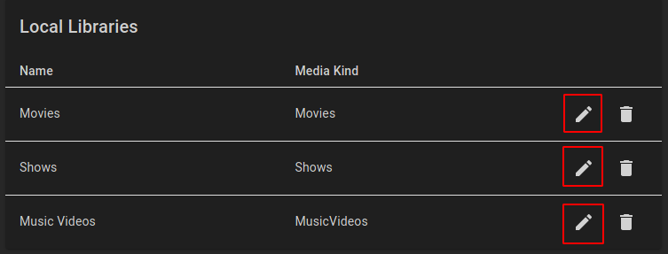
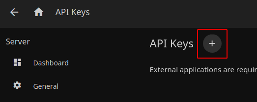
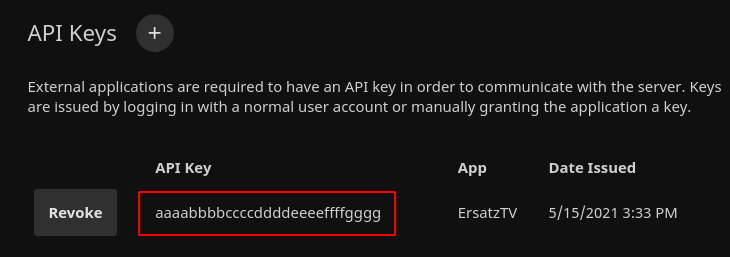
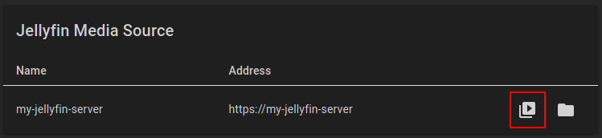
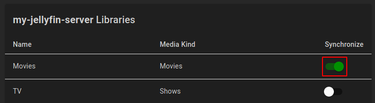
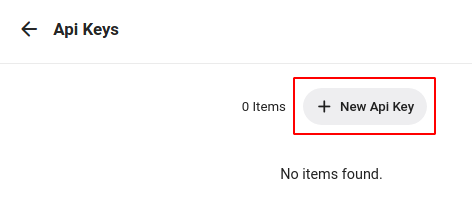
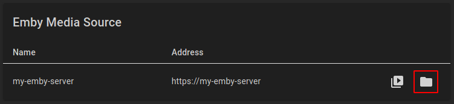
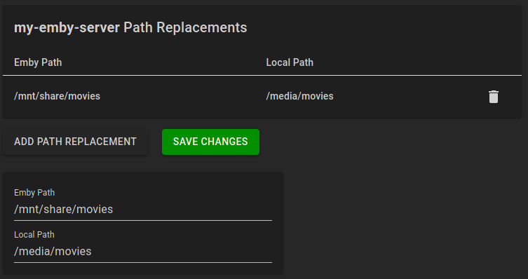
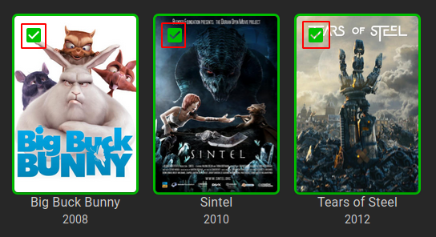

Add Media Items
ErsatzTV needs to know about your media items in order to create channels. Four library kinds are currently supported: Local, Plex, Jellyfin and Emby.
Local Libraries
Local libraries provide a way to schedule media directly from folders; no media server is necessary.
Metadata
With local libraries, ErsatzTV will read metadata from NFO files, falling back to a minimal amount of metadata if NFO files are not found.
Add Libraries
ErsatzTV provides three local libraries by default, one for each supported media kind: Movies, Shows and Music Videos.
Additional libraries can be added under Media Sources > Local.
Add Media Items
To add media items to a local library under Media Sources > Local, click the edit button for the library:

In the Path field, enter the path where your media files of the appropriate kind are stored:

Finally, click Add Path.
When you have added all of your media paths, click Save Changes and ErsatzTV will scan and import your media items.
Plex Libraries
Plex libraries provide a way to synchronize your media (metadata) from Plex to ErsatzTV. This synchronization process is one-way: changes made within Plex are synchronized to ErsatzTV. ErsatzTV will never make any modifications to your Plex configuration or media.
Metadata
With Plex libraries, Plex provides all metadata.
Add Media Items
Sign In
To add media items from Plex, under Media Sources > Plex click the Sign in to Plex button and sign in with your Plex account.
Synchronize Libraries
After signing in, select which libraries you would like to synchronize from Plex to ErsatzTV by clicking the Edit Libraries button for the desired Plex server.

In the libraries listing, click the Synchronize switch for all libraries you would like to synchronize from Plex to ErsatzTV, and click the Save Changes button to start the synchronization process.

Path Replacements
Media items are not streamed from Plex media sources. Instead, ErsatzTV will attempt to play media items from disk using the same path that Plex uses to play the media item. There are two ways to make this work:
- Ensure ErsatzTV has access to exactly the same shares and mounts as Plex
- Configure path replacements to tell ErsatzTV where it should look on its file system for a given Plex folder
Option 1 is recommended as it will "just work" without any further configuration.
To configure path replacements for a Plex media source, click the Edit Path Replacements button in the

Click Add Path Replacement to add a new path replacement, and enter the Plex Path along with the equivalent Local Path for ErsatzTV.
Click Save Changes after you have created all needed path replacements.

Jellyfin Libraries
Jellyfin libraries provide a way to synchronize your media (metadata) from Jellyfin to ErsatzTV. This synchronization process is one-way: changes made within Jellyfin are synchronized to ErsatzTV. ErsatzTV will never make any modifications to your Jellyfin configuration or media.
Metadata
With Jellyfin libraries, Jellyfin provides all metadata.
Add Media Items
Connect to Server
Connecting to a Jellyfin server requires two settings: the server address and an api key.
Server Address
The server address is the address that you type in your web browser to access your Jellyfin server.
API Key
To create a Jellyfin API Key, from the Admin / Dashboard in Jellyfin, select Advanced / API Keys and click the + button near the top.

Give the API Key a name like ErsatzTV and click Ok. The API key is then displayed.

Configuration
Finally, in ErsatzTV, under Media Sources > Jellyfin click the Connect Jellyfin button, enter the Address and Api Key and click Save Changes to connect to your Jellyfin server.
Synchronize Libraries
After connecting, select which libraries you would like to synchronize from Jellyfin to ErsatzTV by clicking the Edit Libraries button for the desired Jellyfin server.

In the libraries listing, click the Synchronize switch for all libraries you would like to synchronize from Jellyfin to ErsatzTV, and click the Save Changes button to start the synchronization process.

Path Replacements
Media items are not streamed from Jellyfin media sources. Instead, ErsatzTV will attempt to play media items from disk using the same path that Jellyfin uses to play the media item. There are two ways to make this work:
- Ensure ErsatzTV has access to exactly the same shares and mounts as Jellyfin
- Configure path replacements to tell ErsatzTV where it should look on its file system for a given Jellyfin folder
Option 1 is recommended as it will "just work" without any further configuration.
To configure path replacements for a Jellyfin media source, click the Edit Path Replacements button in the

Click Add Path Replacement to add a new path replacement, and enter the Jellyfin Path along with the equivalent Local Path for ErsatzTV.
Click Save Changes after you have created all needed path replacements.

Emby Libraries
Emby libraries provide a way to synchronize your media (metadata) from Emby to ErsatzTV. This synchronization process is one-way: changes made within Emby are synchronized to ErsatzTV. ErsatzTV will never make any modifications to your Emby configuration or media.
Metadata
With Emby libraries, Emby provides all metadata.
Add Media Items
Connect to Server
Connecting to a Emby server requires two settings: the server address and an api key.
Server Address
The server address is the address that you type in your web browser to access your Emby server.
API Key
To create a Emby API Key, from the Admin / Manage Emby Server in Emby, select Advanced / API Keys and click the + New Api Key button near the top.

Give the API Key a name like ErsatzTV and click Ok. The API key is then displayed.

Configuration
Finally, in ErsatzTV, under Media Sources > Emby click the Connect Emby button, enter the Address and Api Key and click Save Changes to connect to your Emby server.
Synchronize Libraries
After connecting, select which libraries you would like to synchronize from Emby to ErsatzTV by clicking the Edit Libraries button for the desired Emby server.

In the libraries listing, click the Synchronize switch for all libraries you would like to synchronize from Emby to ErsatzTV, and click the Save Changes button to start the synchronization process.

Path Replacements
Media items are not streamed from Emby media sources. Instead, ErsatzTV will attempt to play media items from disk using the same path that Emby uses to play the media item. There are two ways to make this work:
- Ensure ErsatzTV has access to exactly the same shares and mounts as Emby
- Configure path replacements to tell ErsatzTV where it should look on its file system for a given Emby folder
Option 1 is recommended as it will "just work" without any further configuration.
To configure path replacements for a Emby media source, click the Edit Path Replacements button in the

Click Add Path Replacement to add a new path replacement, and enter the Emby Path along with the equivalent Local Path for ErsatzTV.
Click Save Changes after you have created all needed path replacements.

Collections
ErsatzTV does not schedule individual media items; only collections of items can be scheduled. To create a collection, find the media items you would like to include and select them by clicking the selection button in the top left of the poster:

Then, add to a collection by clicking the Add To Collection button at the top of the page.

In the Add To Collection dialog, either select an existing collection for the items, or enter a new collection name to create a collection and add all of the selected items in a single step.

Big Buck Bunny: (c) copyright 2008, Blender Foundation / www.bigbuckbunny.org
Sintel: © copyright Blender Foundation | www.sintel.org
Tears of Steel: (CC) Blender Foundation | mango.blender.org